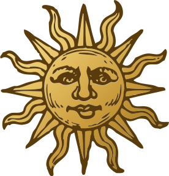

Grateful
Dein 3-Minuten-Tagebuch ist privat. Melde dich mit deinem Konto an, dann schlägt es sich bei heute auf.
Dein 3-Minuten-Tagebuch ist privat. Melde dich mit deinem Konto an, dann schlägt es sich bei heute auf.
Grün: geschrieben · Gold: heute · Tipp auf einen Tag, und das Buch schlägt ihn auf.
Vita somnium breve
Das Leben ist ein kurzer Traum

Die Einstellungen merkt sich nur dieser Browser. Dein Dank-Satz steht in deinem Grateful-Konto; der Rest des Buchs vorerst nur in diesem Browser, bis die neue Tabelle angelegt ist.
Unser Gehirn ist ein hervorragender Alarmgeber. Was schiefgeht, bleibt hängen, was gelingt, rauscht vorbei. Die Psychologie nennt das den Negativitätseffekt: Schlechtes wiegt in unserer Wahrnehmung schwerer als Gutes. Für unsere Vorfahren war das überlebenswichtig. Im Alltag führt es dazu, dass ein Tag mit neun guten Momenten und einem Ärgernis abends als „anstrengend“ abgelegt wird.
Dieses Buch dreht den Spieß um. Es lenkt deine Aufmerksamkeit zweimal am Tag auf das, was da ist und was gelingt. Nicht, um Probleme schönzureden, sondern um das Bild zu vervollständigen. Wer jeden Tag nach Gutem sucht, findet mit der Zeit mehr davon. Nicht weil die Welt sich ändert, sondern weil der Blick sich schärft.
Drei Minuten am Tag reichen: anderthalb am Morgen, anderthalb am Abend. Entscheidend ist nicht die Länge, sondern dass du es tust.
In der Lernpsychologie gehört sie zu den stärksten Prinzipien: Ein Verhalten, auf das etwas Angenehmes folgt, zeigen wir öfter. Am besten wirkt sie, wenn die Belohnung klein ist, sofort kommt und zuverlässig. Genau so ist dieses Buch gebaut:
So entsteht ein Kreislauf: Aufmerksamkeit, gutes Gefühl, Wiederholung, Gewohnheit.
Du trainierst nicht, glücklich zu sein. Du trainierst, das Gute zu bemerken.
Dankbarkeit aufzuschreiben gehört zu den am besten untersuchten Übungen der Positiven Psychologie.
Bei Robert Emmons und Michael McCullough (2003) notierten Menschen zehn Wochen lang einmal pro Woche, wofür sie dankbar waren. Verglichen mit Gruppen, die Ärgernisse oder bloße Ereignisse aufschrieben, sahen sie zuversichtlicher auf die kommende Woche, waren zufriedener mit ihrem Leben, hatten weniger körperliche Beschwerden und bewegten sich mehr.
Martin Seligman und sein Team (2005) ließen Menschen eine Woche lang jeden Abend drei Dinge aufschreiben, die gut gelaufen waren, und warum. Sie fühlten sich glücklicher und weniger niedergeschlagen, noch sechs Monate später.
Und wie lange dauert es, bis so etwas zur Gewohnheit wird? Phillippa Lally und ihr Team (2010) fanden im Mittel 66 Tage, je nach Mensch und Verhalten zwischen 18 und 254. Ein ausgelassener Tag änderte daran kaum etwas.
Emmons & McCullough, J. Pers. Soc. Psychol. 84 (2003) · Seligman u. a., American Psychologist 60 (2005) · Lally u. a., Eur. J. Soc. Psychol. 40 (2010)
Dieses Buch ersetzt keine Therapie. Wenn es dir über längere Zeit schlecht geht, sprich mit jemandem, zum Beispiel mit der TelefonSeelsorge, kostenfrei und rund um die Uhr: +49 800 111 0 111.
Wie glücklich war mein Monat …
Wie gelassen war ich …
Wie gut habe ich für mich gesorgt …
Wie nah war ich meinen Menschen …
Wie oft habe ich Gutes bemerkt …
Wie zufrieden bin ich mit mir …
Ein Satz zu diesem Monat:

Heute früh sage ich Danke für …GRATEFUL
Mein kleiner Schritt, der heute zählt:
Mit dieser Haltung gehe ich in den Tag:
Wem habe ich heute gutgetan …
Mein Lichtblick des Tages:
Was nehme ich mit, was lasse ich hier …
Worauf bin ich diese Woche stolz …
Wer hat meine Woche heller gemacht, und weiß er es schon …
Was hat mir Kraft gegeben, was hat Kraft gekostet …
Worauf freue ich mich nächste Woche …
Frage der Woche: Welche kleine Gewohnheit würde mir mein Ich in einem Jahr danken …

Wissen ist ein Schatz, der seinem Besitzer überallhin folgt.Sprichwort aus ChinaDasselbe Blatt sehen ab Montag deine Klassen.
Morgens drei Gedanken, jeder 30 Sekunden. Die Uhr gibt nur den Takt vor, sie drängt nicht.
In der Mitte liegt ein Gedanke für den Tag; den Gedanken der Woche zeigt die Wochenseite.
Abends drei Gedanken, dann die Haken für die Gewohnheiten.
Sonntags die Woche auf einer Doppelseite. Hinten wächst dein Jahr in Worten.
„Grateful – Das 3-Minuten-Tagebuch“ ist ein Buch von Dr. Michael R. Alvers (Doc Alvers), © 2026. Anbieter und Kontakt: docalvers.de/impressum · Datenschutz: docalvers.de/datenschutz.
Ein Claude-Buch: Gestaltung, Programmierung und Recherche entstanden im Dialog mit Claude (Claude Opus 5.5 in Claude Code), einem KI-Modell von Anthropic PBC, San Francisco – anthropic.com/claude. Idee, Auswahl und letzte Entscheidung: Dr. Michael R. Alvers.
Deine Einträge liegen in deinem Konto; die Einstellungen merkt sich nur dieser Browser. Nur an den Tagen mit Musik (Advent, Weihnachten, Totensonntag und die anderen Festtage des Buchs) und erst, wenn du auf das Porträt oder das Bild daneben bzw. an Weihnachten auf den Vorhang klickst, lädt ein YouTube-Player (über youtube-nocookie.com); erst dann gehen Daten an YouTube (Google), vorher keine einzige Anfrage.
Bilder: Arnold Böcklin, „Vita somnium breve“ (1888, Kunstmuseum Basel) und die Porträts der Persönlichkeiten, gemeinfrei, über Wikimedia Commons · Holz: Poly Haven (CC0) · Sonne und Mond der Tagesseiten: alte Holzschnitte, in Gold koloriert – die Sonne von johnny_automatic, Openclipart (gemeinfrei), der Mond nach einer Buchillustration im British Museum (BM 1982,U.2229), vektorisiert von Jerimee, Wikimedia Commons (gemeinfrei) · Spieluhren „Happy Birthday“: marianna-emma, „Guten Abend, gut’ Nacht“: Garuda1982, beide freesound.org (CC0) · Adventskranz: „2023 Adventskranz 6“ von Burkhard Mücke, Wikimedia Commons (CC BY 4.0), freigestellt, die Kerzen je Sonntag heruntergebrannt · Kerze und Flamme: Richard W. M. Jones und Jon Sullivan, Wikimedia Commons (gemeinfrei) · Musik im Advent: J. S. Bach, Weihnachtsoratorium BWV 248 – Netherlands Bach Society (All of Bach), Shunske Sato, eingebettet von YouTube · J. S. Bach nach dem Porträt von Elias Gottlob Haußmann (1748, gemeinfrei), als Bleistiftzeichnung · Barockrahmen: Neapel um 1660, The Metropolitan Museum of Art (CC0) · Musik an Weihnachten: J. S. Bach, Weihnachtsoratorium, Schlusschoral „Nun seid ihr wohl gerochen“ – Netherlands Bach Society, Lars Ulrik Mortensen (AVROTROS Vrijdagconcert, Utrecht 2024), eingebettet von YouTube · Musik am Totensonntag: W. A. Mozart, Requiem KV 626 – Chor und Symphonieorchester des Bayerischen Rundfunks, Mariss Jansons (ARD Klassik), eingebettet von YouTube · W. A. Mozart nach dem Porträt von Barbara Krafft (1819, gemeinfrei) und die erste Seite seiner Handschrift des Requiems (1791, gemeinfrei), beide über Wikimedia Commons, als Bleistiftzeichnung · Ebenholzrahmen: Nürnberg, frühes 17. Jh., The Metropolitan Museum of Art, Robert Lehman Collection (CC0) · Musik der Festtage, eingebettet von YouTube: J. Strauss, „An der schönen blauen Donau“ – Wiener Philharmoniker, Riccardo Muti · A. Vivaldi, „Die vier Jahreszeiten“ – Netherlands Bach Society, Shunske Sato · G. F. Händel, „Hallelujah“ – Sydney Philharmonia Choirs and Orchestra (ABC Classic) · „Der Mai ist gekommen“ – Jugendkonzertchor der Chorakademie Dortmund · L. van Beethoven, 9. Sinfonie – hr-Sinfonieorchester, MDR-Rundfunkchor, Andrés Orozco-Estrada · „Laterne, Laterne“ – Rundfunk-Kinderchor Berlin · „Lasst uns froh und munter sein“ – Kinderchor der Lutherana Karlsruhe · „Stille Nacht“ – Thomanerchor Leipzig · „Ihr Kinderlein, kommet“ – Dresdner Kreuzchor, Kreuzkantor Roderich Kreile (MDR 2015, Kanal CHOR GESANG) · G. F. Händel, „Music for the Royal Fireworks“ HWV 351 – hr-Sinfonieorchester, Richard Egarr (Hessischer Rundfunk 2021) · TWO LANES, „Live Performance (Piano Set)“ (Neujahr 2027, Kanal TWO LANES), der Flügel als Bleistiftzeichnung nach einem Foto von pxhere, Wikimedia Commons (CC0) · Bleistiftzeichnungen nach gemeinfreien Vorlagen über Wikimedia Commons: Johann Strauss (Fotografie Fritz Luckhardt), Antonio Vivaldi (unbekannter Maler, 1723), G. F. Händel (Thomas Hudson), Ludwig van Beethoven (Joseph Karl Stieler, 1820), Franz Xaver Gruber (Sebastian Stief, 1846), Händels und Beethovens Handschriften, Kirschzweig, Weizen (Köhler’s Medizinal-Pflanzen), Weintrauben (Otto Wilhelm Thomé), Schneeflocke (Wilson A. Bentley), Feuerwerk (Foto der U.S. Air Force, Eielson 2014); der heilige Nikolaus nach einem Stich der Wellcome Collection (CC BY 4.0); Geige („Antonius“, Antonio Stradivari 1711) und Laterne (M’Cord & Shiner): The Metropolitan Museum of Art (CC0); die Kreuzkirche Dresden nach einem Foto von Jörg Blobelt, Wikimedia Commons (CC BY-SA 4.0), freigestellt; das Notenblatt „Ihr Kinderlein, kommet“ (Melodie J. A. P. Schulz 1794, gemeinfrei) eigener Notensatz mit Verovio · Flammen: Simplex-Rauschen aus „webgl-noise“ von Ian McEwan (Ashima Arts) und Stefan Gustavson (MIT-Lizenz) · Schriften: Google Fonts (SIL Open Font License).